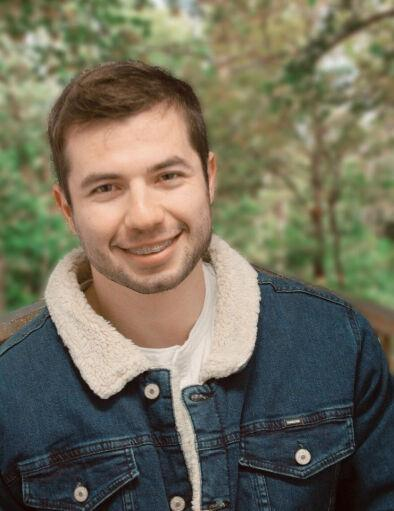
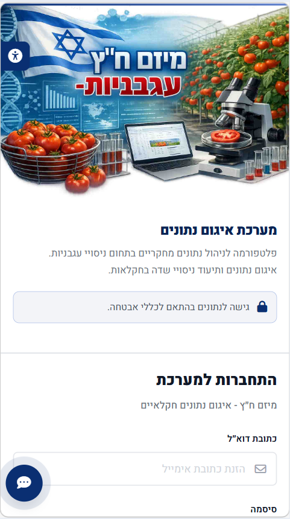

Yehuda Heller
Software Engineer — M.Sc. CS (Ongoing)
Yehuda Heller
Software Engineer
I'm a software engineer specializing in artificial intelligence, Android applications, Edge AI, web applications, and embedded systems. Currently completing my M.Sc. in Computer Science; holder of a B.Sc. in Computer Science, Electronic Engineering credentials, and advanced software development trainings.
Some of my recent projects
A showcase of deep learning, computer vision, web applications, and Edge AI development
Neural Network for Pecking Behavior & Chicken Counting
Trained a neural network to detect pecking interactions in video footage and count chickens on cooling perches. Conducted successful initial experiments on a specialized video dataset to optimize detection accuracy in real-time farming scenarios. The side-by-side videos above demonstrate the raw input compared to the real-time AI keypoint tracking and classification outputs.
 Spectral Analysis
Spectral Analysis
Avocado Hyperspectral Quality Analysis
A Python-driven hyperspectral computer vision pipeline utilizing the spectral (SPPy) library for ENVI data cube manipulation and NumPy for high-dimensional tensor operations. The architecture leverages SciPy for statistical feature ranking via independent t-tests and scikit-learn to deploy optimized Random Forest and Decision Tree classifiers. By extracting GINI impurity feature importance and utilizing Elbow Curve analysis, the system compresses a 204-band spectral contract down to an ultra-lightweight, illumination-invariant 2-band arithmetical ratio, increasing inference speed by 67× while maintaining an 89.1% F1-macro classification score.
 Interface Analysis
Interface Analysis
Dates Palm Yield Forecasting & Skin Analysis
A precision agriculture web application featuring a hybrid ML architecture: it couples real-time, client-side inference (Random Forest and XGBoost) for date palm yield forecasting with a serverless cloud tier powered by Google Cloud Functions for skin-mode (skin separation) prediction, delivering zero-latency predictive analytics from dynamic agronomic and climate inputs.

Interface OverviewResearch Data Pooling System
A responsive Full-Stack web application powered by Firebase Suite, utilizing Cloud Firestore NoSQL for dynamic data modeling and Firebase Storage for secure file management. Server-side access control is strictly enforced via context-aware Firebase Security Rules. Built with HTML5, CSS3, and Modern Vanilla JS (ES6), the client integrates Chart.js for interactive BI analytics, Leaflet (OSM) for GPS-based research mapping, and a debounced auto-save mechanism with form signature verification to prevent data loss.
 Keypoint Analysis
Keypoint Analysis
Neural Network for Cow Head Position Analysis
Annotated a custom dataset of cow images and engineered a deep learning model to pinpoint spatial coordinates of the head, eyes, nose, and mouth. Processed over 250,000 images to extract precise spatial keypoints for downstream behavior analysis.
 Production Web App
Production Web App
Activity Reporting System for Research Engineers
Developed a full web-based enterprise application enabling research engineers to log daily/weekly engineering tasks. Built a complete dashboard for administrators to view reports, generate metrics, and track productivity. Fully active and in daily use.
 Android App
Android App
Android App for Microscopic Well Analysis
Developed a native mobile application that captures and analyzes microscope plate wells to compute intensity values (similar to desktop ImageJ). Implemented support for RGB, Luma, and Blue-Channel analysis, matching desktop computer accuracy.
Global Collaboration
Remote and Collaborative Work
Based in Israel. Available for advanced engineering positions and consulting in Artificial Intelligence, Android App Development, Web Architectures, and Embedded Systems. Open to international client collaborations, matching cross-border timezone schedules seamlessly.
Contact MeGet In Touch
Let's discuss new opportunities, technical collaborations, or consulting projects.
Yehuda Heller
Software Engineer | M.Sc. Computer Science Candidate
Feel free to reach out via email or connect with me on LinkedIn. I generally respond within a few hours.